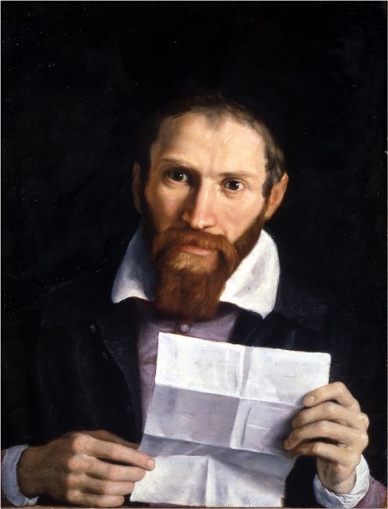

Autore: Annibale Carracci
Titolo: Ritratto di mons. Girolamo Agucchi
Data: ca. 1603–1604
Tecnica: Olio su tela
Collocazione attuale: York, York City Art Gallery, inv. 787 già Bologna, Palazzo Agucchi
Questo ritratto di Monsignor Girolamo Agucchi, intellettuale e mecenate bolognese, fu realizzato da Annibale Carracci nei primi anni del XVII secolo. L’opera è considerata uno dei capolavori della ritrattistica di primo Seicento, con una resa psicologica attenta e realistica.